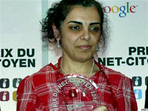

|
|

جایزه شهروند نت برای همه مبارزان مدنی
جمعه21 اسفند 1388
تغییر برای برابری - در یک اقدام مشترک، سازمان گزارشگران بدون مرز با همکاری گوگل، نخستین جایزهی "شهروند نت "را به سایت تغییر برای برابری اهدا کرد. همچون سایر جوایزی که تاکنون کمپین و سایت آن دریافت کرده است جایزه دریافتی سایت نیز صرفا معنوی است.
در این مراسم دبیر کل سازمان گزارشگران بدون مرز، ژان-فرانسوا ژولیار، طی سخنانی اظهار داشت وبلاگنویسان ایرانی بسیار فعال اند و به این خاطر شایستۀ پشتیبانی. زیرا، بدون شهامت و عزم راسخ آنان محروم از اطلاعات لازم برای فهم جهان هستیم.

دیوید دروموند، معاون شرکت گوگل نیز طی سخنانی آزادی بیان را عنصر تعیین کننده ای توصیف کرد که قدرت بیشتری به افراد می دهد.ااو گفت ما در گوگول تلاش میکنیم که بیشترین اطلاعات و بیشترین انتخاب به کاربران در بیشترین کشورها داده شود. امروز حمایت از جایزه نت شهروندان گزارشگران بدون مرز و ارج گذاری به شجاعت جمعی " تغییر برای برابری" فرصتی است برای نشان دادن آنچه که عمیقا به آن معتقدیم. "
جایزه "شهروند نت" در آغاز روز جهانی مبارزه با سانسور اینترنتی، 12 مارس هر سال به فعال مبارزه با اینترنت اهدا می شود. امسال از میان ۵ نامزد دیگر به سایت تغییر برای برابری تعلق گرفت. در مراسم اهدای جایزه که 11 مارس در مرکز گوگل پاریس با حضور تعدادی از روزنامهنگاران و فعالان حقوق بشر برپا شد، پروین اردلان روزنامهنگار و فعال حقوق زنان جایزهی شهروند نت را از دست ژان ماری کلمبانی روزنامهنگار معروف فرانسوی دریافت نمود و آن را به همهی روزنامهنگارانی که در راه مبارزه برای آزادی بیان در ایران قربانی شدهاند و به زندان رفتهاند تقدیم کرد.
پروین اردلان پس از دریافت جایزه اظهارداشت : " «انتخاب این جایزه را به فال نیک میگیرم. خبرنگاران بدون مرز  سالها است که در زمینهی آزادی بیان و حمایت از فعالانی که برای آزادی بیان تلاش میکنند، مبارزه میکند و تمام اخبار آنها را انعکاس میدهد. گوگل برای کسانی چون من که در ایران زندگی میکنیم در حمایت از حرکت جنبشها نقش موثری داشته است. حداقل جیمیل برای ما تا به حال یک مکان امن بوده است. مورد سومی را که در این پیوند میبینم بحث ورود زنان به عرصهی سایبری است که فکر میکنم انتخاب سوم شاید به این دلیل بوده باشد، منظورم این است که در کنار خبرنگاران بدون مرز از یک طرف و کمپانی گوگل از طرف دیگر، انتخاب یک روش زنانه و به کار بردن این روش و این شیوه در عرصهی سایبری یکی از تاثیرات مهمی است که از جهت آن باید به خودمان مغرور باشیم زیرا در این عرصه بخش سوم این پیوند را تشکیل دادیم.»
او با اشاره به فیلترینگ سایت تغییر برای برابری به مدت ۲۲ بار گفت این نشان از مقاومتی دارد که سالهاست در جریان است. این مقاومت از فضای واقعی وارد فضای مجازی شد، در حقیقت جنبش زنان ایران سالها است که مقاومت میکند و ادامه میدهد. به همین دلیل است که وقتی به عرصهی سایبری نیز وارد میشود سعی میکند شیوهی دموکراتیک و افقی خودش را که ما همیشه از آن نام میبریم در آن عرصه هم وارد کند. آن چیزی که در ادامهی این حرکت لازم است، وجود این حرکت زنانه در فعالیتهای اینترنتی و سایبری است. حرفم را خلاصه میکنم، در کنار حرکت فعالانه آزادی بیان، کاری که خبرنگاران بدون مرز انجام میدهند و در کنار دانش تکنولوژی که گوگل در این عرصه وارد میکند، یک حرکت زنانه و افقی و دموکراتیک لازم است که این حرکت را پر بها بکند. ما حداقل سالها است که در یک جامعهی تمامیتخواه سعی کردیم روشهای دموکراتیک را وارد کنیم و آنها را نه وادار به واکنش، حداقل وادار به عمل کنیم. اگر این مقاومت مدنی را ادامه دهیم میتوانیم یک رسانه اجتماعی بدون مرز را که نیازش احساس می شود پدید آوریم. »
او در پایان ضمن سپاس از اهدا کنندگان این جایزه اشاره داشت که این جایزه، این جایزه نه به من و نه حتی به تمام اعضای کمپین، بلکه فکر میکنم این جایزه به تمام کسانی تعلق دارد که هم برای آزادی بیان تلاش میکنند، هم دانش آن را به ما میدهند و هم در زندانها و زندگی شان به خاطر آن هزینه پرداخت می دهند. مبارک همهی آنها باشد»
لینک های مرتبط